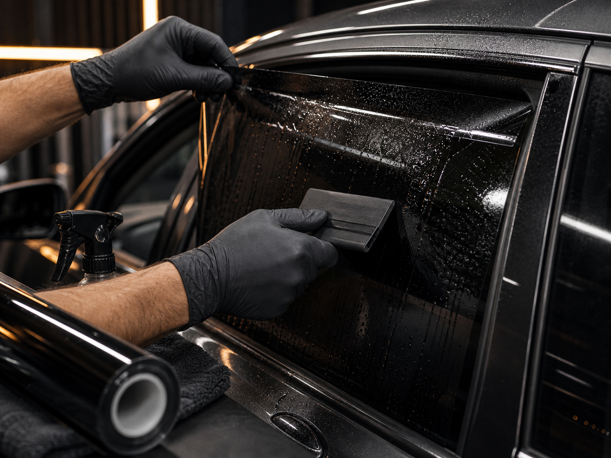
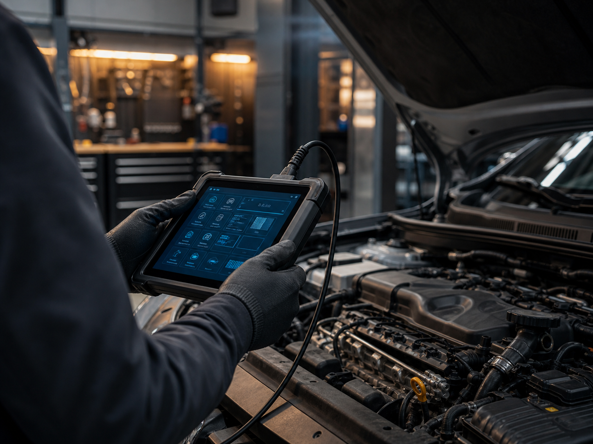
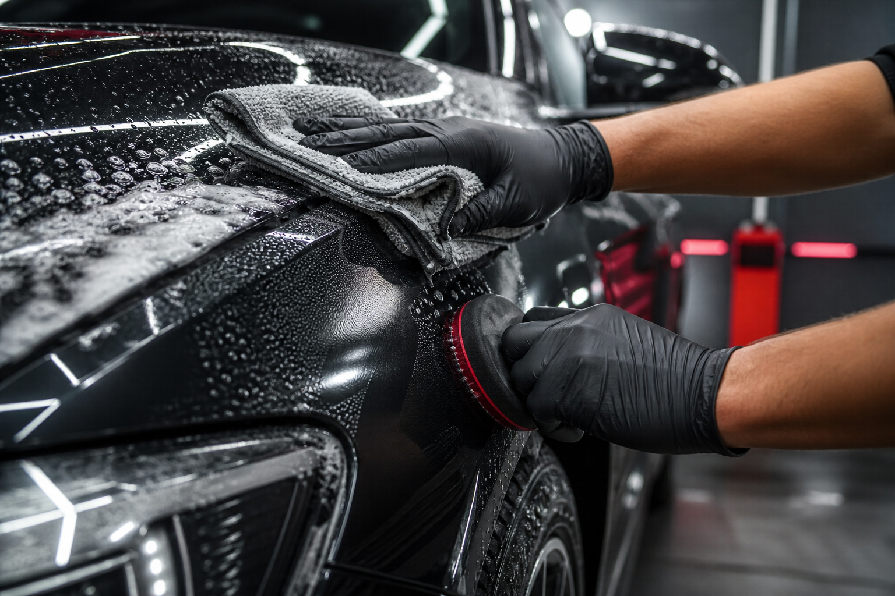
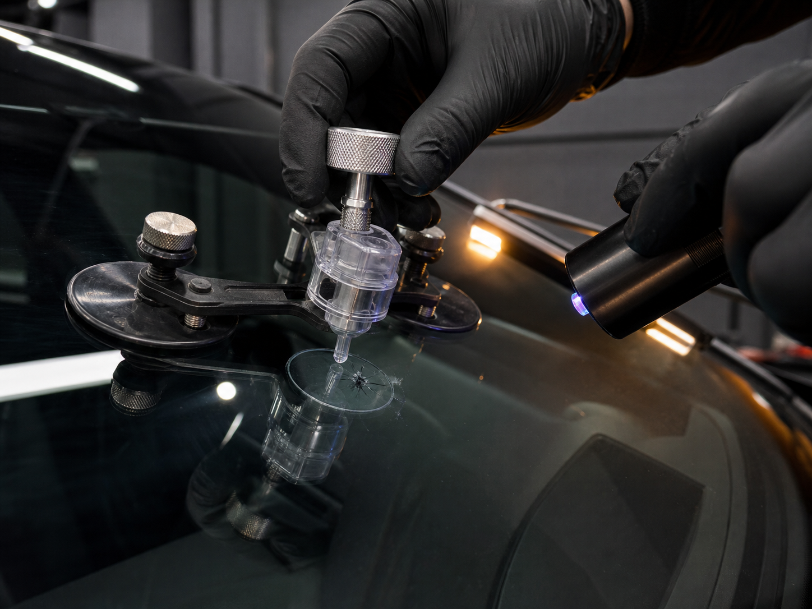

Тонировка стёкол по ГОСТу
от 5 500 ₽Подбор и установка плёнки с учётом требований к светопропусканию.
Для тех, кто хочет затемнить авто без лишнего риска по правилам.
В отзывах отмечают консультацию по качеству и свойствам плёнки.Домодедово, ул. Корнеева, 14, Домодедово
Тон+ помогает быстро закрыть понятные задачи по автомобилю: затонировать стёкла, установить сигнализацию или автозапуск, защитить плёнкой кузов и отремонтировать скол на лобовом стекле.
Каждая карточка показывает стартовую цену из Яндекс.Карт, что входит по смыслу и какой страх клиента она закрывает. Итоговую стоимость стоит подтвердить по телефону до приезда.

Подбор и установка плёнки с учётом требований к светопропусканию.
Для тех, кто хочет затемнить авто без лишнего риска по правилам.
В отзывах отмечают консультацию по качеству и свойствам плёнки.
Монтаж охранных систем, парктроников и другого автооборудования.
Перед работой можно понять состав установки и итоговую стоимость.
Клиенты пишут, что мастера объясняют работу оборудования при выдаче.Установка с сохранением заводской гарантии и сертификатом соответствия.
Подходит, когда важны комфорт, безопасность и документы по установке.
В карточке указаны сертификат соответствия и сохранение заводской гарантии.Плёнка для стёкол с защитной и визуальной задачей.
Можно закрыть конкретную зону, а не оплачивать лишний объём работ.
В отзывах часто упоминают аккуратность и скорость работ со стеклом.
Нанесение защитной плёнки на элементы кузова.
Помогает защитить зоны риска от мелких повреждений.
Клиенты отмечают качество материалов и выполнения работ.
Ремонт лобовых стёкол, сколов и трещин.
Быстрая диагностика повреждения до замены стекла.
По отзывам, небольшие сколы закрывали быстро; итог зависит от состояния стекла.На сайте показаны стартовые цены из карточки. Итоговую стоимость мастер называет до начала работы, когда понятен объём.
Рейтинг 5,0, 144 оценки, 68 отзывов. В отзывах чаще всего повторяются: аккуратно, быстро, объяснили, не обманули в оплате.
Запись идёт по времени. По отзывам часть работ делали в день обращения, но точный срок зависит от услуги, автомобиля и состояния стекла.
Основные телефоны, карта и форма заявки доступны с первого экрана и закреплены снизу на мобильном.
Путь сделан коротким для мобильного пользователя: сначала услуга и звонок, потом уточнение объёма, работа по времени и оплата после результата.
На сайте сразу видны основные направления и стартовые цены.
Марка авто, тип плёнки, сигнализация, состояние стекла и ожидаемый срок.
В карточке указана предварительная запись, поэтому визит проще планировать заранее.
После выполнения можно оплатить наличными, картой или через СБП.
Можно согласовать время до приезда и не ждать свободного окна на месте.
В карточке указана постоплата; также доступны наличные, карта и СБП.
Гарантия указана среди особенностей сервиса, а по сигнализациям есть сертификат соответствия.
Есть парковка, Wi-Fi, туалет и доступность для посетителей на инвалидной коляске.
В карточке Яндекс.Карт указано 68 отзывов. Ниже вынесены повторяющиеся смыслы: объясняют цену, принимают по записи, работают аккуратно, помогают с тонировкой, сигнализациями и стеклом.
Открыть карточку на Яндекс.КартахПозвонил, записался в этот же день. Мастер объяснил, что нужно сделать и сколько это будет стоить.
Цена до работыДелала тонировку: рассказали про качество и свойства плёнки, работали внимательно и спокойно.
КонсультацияУстанавливал парктроник и сигнализацию. Отмечает оперативность, грамотность и честность в оплате.
ДопоборудованиеСигнализацию с автозапуском сделали день-в-день, комплект распаковали при клиенте, при выдаче всё объяснили.
СигнализацияРемонтировал скол на стекле: в отзыве отдельно отметил быстрый приём по времени и аккуратный результат.
Ремонт стеклаРемонт стекла зависит от размера, направления трещины и давности повреждения. Чтобы не обещать лишнего, лучше описать повреждение по телефону или показать мастеру на месте; после этого понятны риск, срок и цена.
Записывайтесь заранее: это снижает ожидание на месте и помогает мастеру подготовиться под конкретную работу.
Построить маршрутул. Корнеева, 14, Домодедово